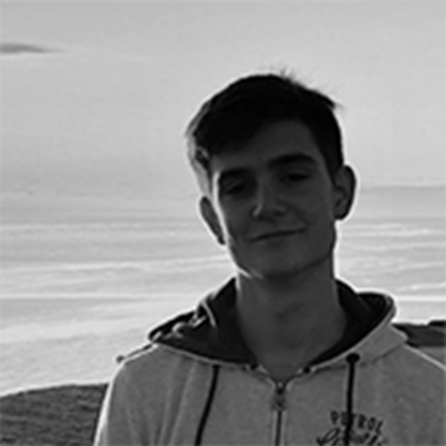
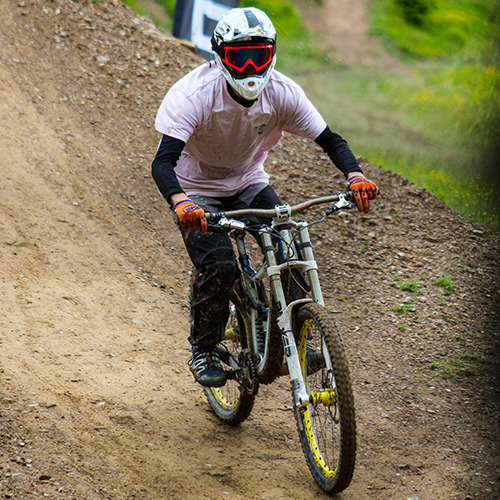

Voici quelques exemples de mes réalisations




Bonjour et bienvenue sur mon Portfolio.
Je m 'appelle Marco, j 'ai 20 ans et je suis
passionné de sport et d 'informatique.
Grâce à un DUT Informatique que j 'ai réalisé à Grenoble, j 'ai pu développer mes
compétences pour pouvoir créer des sites internet comme celui-là.
Je réalise sur mesure des sites vitrines ou portfolio pour que vous puissiez développer votre activité.
Je suis également à l 'aise avec Wordpress si vous souhaitez utiliser un CMS.
N 'hésitez pas à me contacter quelque soit le projet.
Au plaisir de travailler ensemble.